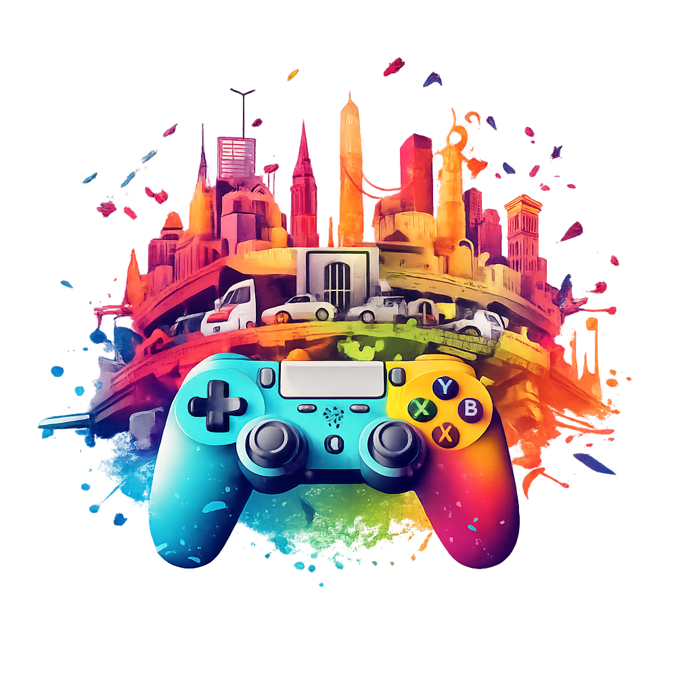

<nav class="navbar navbar-expand-lg gaming-navbar" data-bs-theme="dark">
  <div class="container-fluid">

    <a class="navbar-brand brand-wrapper" routerLink="/inicio">
      

      <div class="brand-text">
        <span class="brand-title">GOTY</span>
        <span class="brand-subtitle">Game Awards</span>
      </div>
    </a>

    <button
      class="navbar-toggler gaming-toggler"
      type="button"
      data-bs-toggle="collapse"
      data-bs-target="#navbarNav"
      aria-controls="navbarNav"
      aria-expanded="false"
      aria-label="Toggle navigation">
      <span class="navbar-toggler-icon"></span>
    </button>

    <div class="collapse navbar-collapse justify-content-end" id="navbarNav">
      <ul class="navbar-nav gaming-nav-list">
        <li class="nav-item" routerLinkActive="active" [routerLinkActiveOptions]="{ exact: true }">
          <a class="nav-link gaming-link" routerLink="/inicio">
            <span>Inicio</span>
          </a>
        </li>

        <li class="nav-item" routerLinkActive="active">
          <a class="nav-link gaming-link vote-link" routerLink="/goty">
            <span>Votar</span>
          </a>
        </li>
      </ul>
    </div>

  </div>
</nav>
